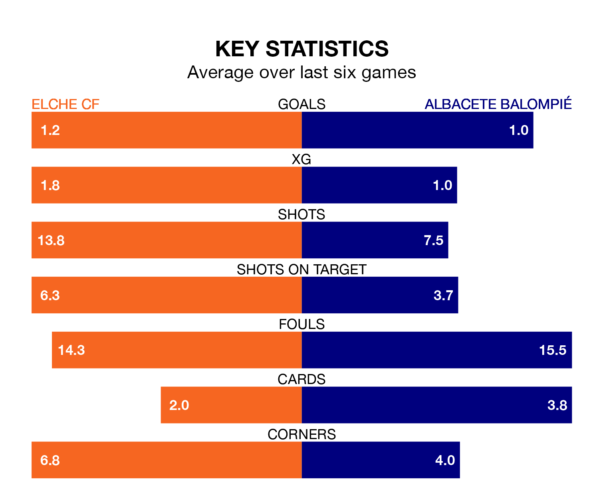

Elche CF host Albacete Balompié at the Estadio Manuel Martínez Valero on late Sunday on the back of three consecutive wins in the Segunda División.
Elche have picked up 13 points from their last six games, and they face an Albacete side who have lost their last two matches, and collected six points from the last possible 18.
Elche are second in the table after 30 games, of which they have won 14 and drawn eight, earning 50 points.
Albacete are 16 places behind the home side in 18th, with seven wins and 10 draws putting them on 31 points.
In the last 10 years, Elche and Albacete have played each other on seven occasions. They won two each, and they drew three times.
On average, Elche scored 0.9 goals and Albacete 0.7 in those matches.
Their last meeting was on November 4, when they played out a 1-1 draw.
With 30 goals in 30 games so far this season, Elche are scoring at below the league average rate with 1.0 goals per game. But they are conceding fewer than average too, letting in 23 goals at a rate of 0.8 per game.
The visitors, meanwhile, are average scorers, with 1.1 goals per game. They have conceded 1.4 goals per game.
Elche's last match was on March 10, a 1-0 win against Villarreal B, with Nicolás Castro getting the goal for Elche.
Albacete lost 2-1 against Real Oviedo last time out, on March 9, with Carlos Isaac on the scoresheet.
Sunday's match will be refereed by Miguel Sesma Espinosa, who has taken charge of 14 Segunda División games so far this season, issuing three red cards and booking 62 players. He has not awarded any penalties.
The last Elche game Sesma Espinosa refereed was a 1-1 away draw with Albacete Balompié on November 4. His last Albacete match was their 2-1 loss away at Burgos CF on January 28.
Updated: 15:10 (UTC), 15/03/24